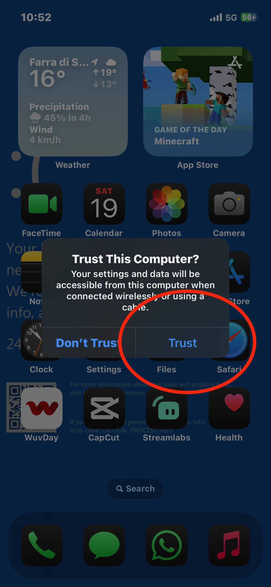
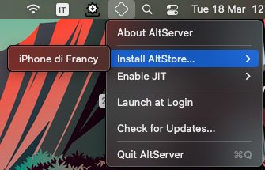

AltStore is a sideloading tool for iOS that allows you to install apps not available on the App Store. It is available for both macOS and Windows.
First, download AltStore from the official website: https://altstore.io/#Downloads
Note for Windows: you have to download iTunes and iCloud
(not from Microsoft Store, if you have them, uninstall them)
Now run AltServer on your PC you can find it, on macOS you can find it on the top bar
Connect your iOS device to your PC via USB or connect your PC and your iDevice to the same Wi-Fi Network
Now trust your device
Click on the AltServer icon on the top bar and click on "Install AltStore" and select your device

Now AltStore will ask you your Apple ID and your Password, insert them and (if you have it) enter the 2FA code

Now you will see the AltStore app on your homescreen
Now when you try to open the app, probably you have to trust it: so go to Settings -> General -> VPN & Device Management -> Click on your Apple ID and click on trust; now AltStore will open

Open AltStore, click on MyApps on the bottom tab, click on the + button and select the .ipa that you desire to install
All Done!